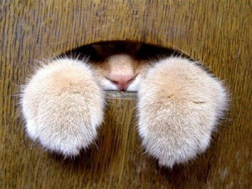

De los amigos felinos se dice mucho, incluso están posicionados en la mente de los humanos como animales
muy ociosos pero con muchas capacidades. Pero, realmente ¿quién es el gato?, pues es un animal doméstico
que pesa aproximadamente 5 kilos y mide en promedio 80 centímetros. El parecido a un pequeño león o lince
no es casualidad ya que todos pertenecen a la familia de felinos y son mamíferos. Aunque está de más
decir que son peludos y existen muchas razas es también importante resaltar esta característica para
familiarizarse más con este animal tan tierno. Debido a todas las cualidades que tienen estos felinos han
sido una buena compañía para quienes los han adoptado, pero se ha considerado una mascota a partir del
siglo XIX. Seguramente te preguntas qué eran antes, pues eran animales domésticos que estaban en las
calles de los pueblos pequeños. Podríamos continuar hablando sobre los amigos felinos que son tan
importantes como los caninos pero para conocer específicamente qué los distingue aquí hay 10
características de los gatos que son muy notables y que además es lo que les permite ser tan consentidos
y amados por los humanos.
Regresar Arriba.